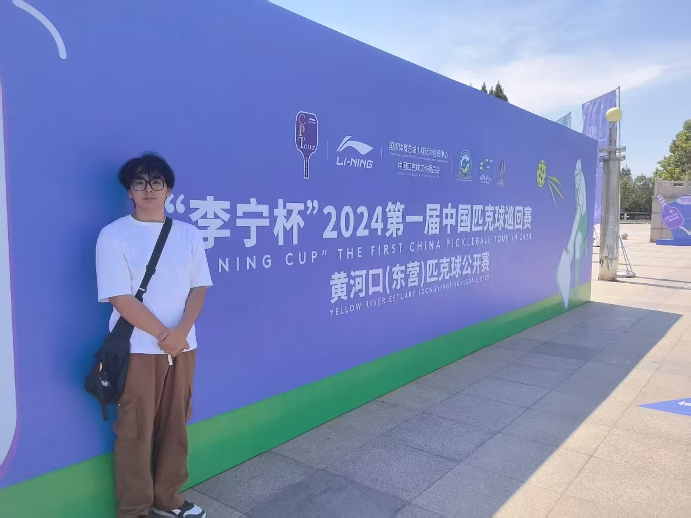
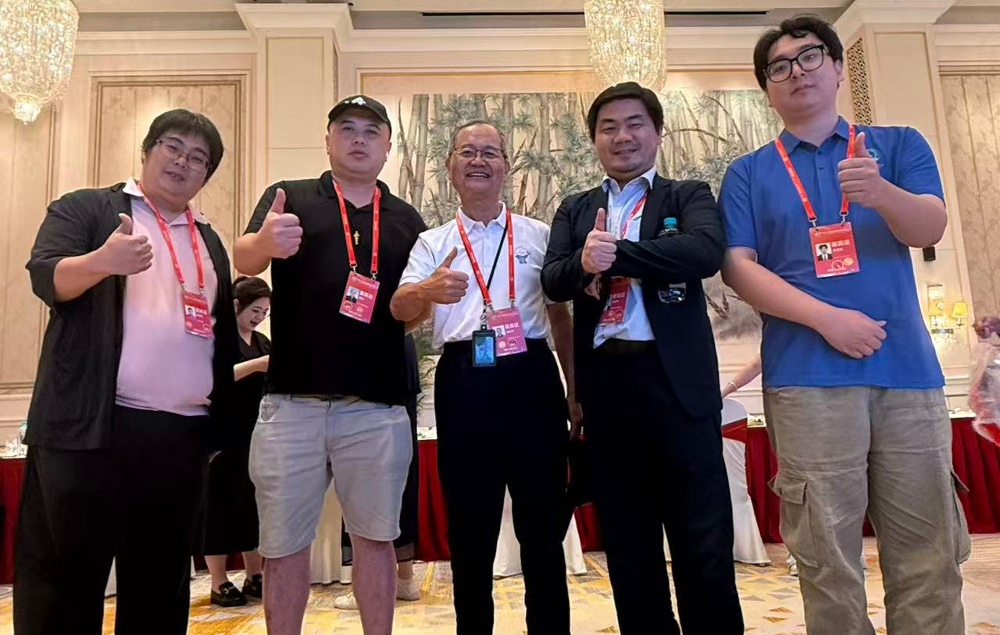
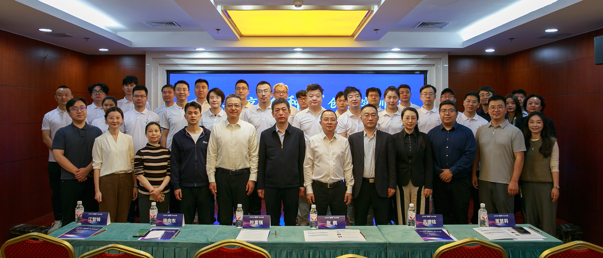
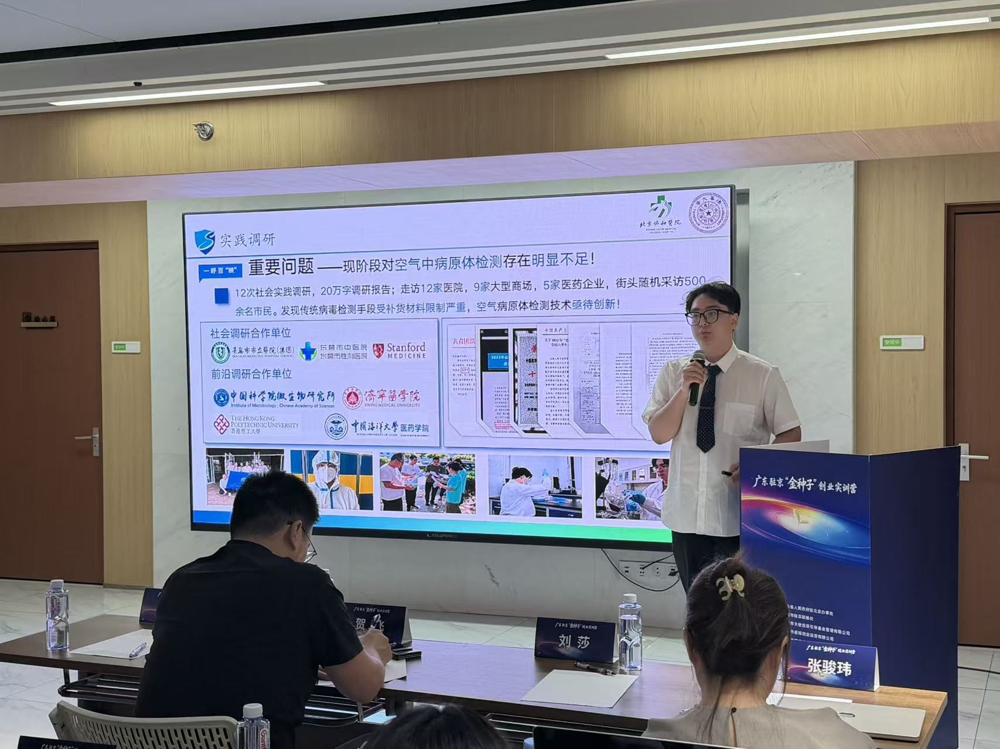
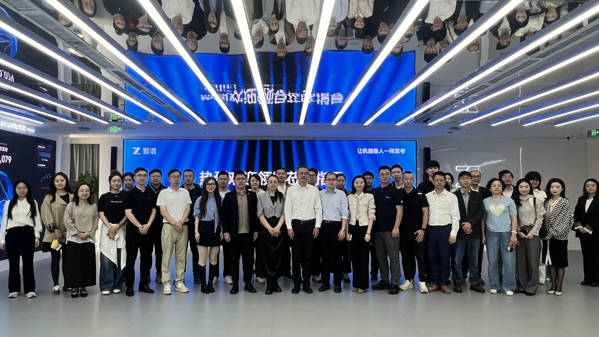

姜博茏Keung Adrian Pok Lung
北京协和医学院（清华大学医学部）临床医学博士生
Ph.D. Candidate in Clinical Medicine, Peking Union Medical College (Tsinghua University)
向下滚动 / Scroll Down
北京协和医学院（清华大学医学部）临床医学博士生
Ph.D. Candidate in Clinical Medicine, Peking Union Medical College (Tsinghua University)
一个交织药学和临床医学，
对世间万物保有热爱与好奇的小镇青年

I am currently a Ph.D. candidate in Clinical Medicine at Peking Union Medical College (Tsinghua University). My average scores during both undergraduate and doctoral studies exceed 90. I serve as the primary student investigator for 8 research projects, hold 3 patents as first inventor, and have published papers in SCI Q1 TOP and Q2 journals as co-first author and second author. I have also been commissioned by Chemical Industry Press to author or independently write 3 medical books (accepted and in progress, pending publication).
Beyond research, I am an entrepreneur. As the founder and CEO of Comverse Pharmaceutical Technology Co., Ltd., I lead a company backed by the National Key R&D Program (Life Safety) and multiple State Key Laboratories. We have developed an airborne pathogen detection system with internationally leading sensitivity, established collaboration intentions with Peking Union Medical Hospital and other institutions, and earned recognition from the Director of the Chinese Center for Disease Control and Prevention and National People's Congress representatives who proposed China's public health emergency legislation. I have received 34 national, provincial, and municipal awards including the China International College Students' Innovation Competition Silver Award and the National Undergraduate Life Science Competition Second Prize, along with 25 honors including China Brand Youth Leader (4 nationwide), National Scholarship Representative (5 university-wide), and People's Daily Scholarship (9 out of thousands of universities nominated).
Lastly, I am a young person passionate about diverse fields — songwriting, writing, photography, video editing, marathons, and more. "No challenge, no youth."
我目前是清华大学北京协和医学院的临床医学博士生（PhD），本科与博士期间平均成绩均高于90分，以学生第一负责人负责8项科研项目，以第一发明人授权或公开3项专利，以共同第一作者、第二作者等身份发表SCI一区TOP、二区等文章，以主编受化学工业出版社委托撰写或自主撰写3本医学书籍（已接收委托并撰写，待出版）。
除了科研，我也是一名创业者。作为创业者我创立康维斯医药技术有限公司并担任CEO，公司依托国家重点研发计划项目生命安全专项和多个国家重点实验室，研发出一款国际领先灵敏度的空气病原体检测系统，和北京协和医院等单位达成合作意向，获得国家疾控中心主任、提出我国公共卫生事件法案的全国人大代表等人的认可与持续对接。获得中国国际创新大赛银奖、全国大学生生命科学竞赛二等奖等国家级、省市级奖项共34项，获得中国品牌青年领袖（全国共4名）、国家奖学金获奖代表（全校共5名）、人民网奖学金（全国千所高校推荐者中获奖的9名本科生之一）等各类荣誉25项。
最后，我也是一位对各种领域都保有热爱的青年，热爱写歌、写作、摄影、剪辑、马拉松等等。"无挑战，不青春"。
学术旅程的每一步 / Each Step of My Academic Journey
学术型博士学位（PhD） | Academic Doctorate (PhD)
导师：待定 / Supervisor: TBD
研究方向：探索微环境在调控先天性和适应性免疫中的作用机制
Research: Exploring the role of the microenvironment in regulating innate and adaptive immunity
专业型博士学位（MD） | Professional Doctorate (MD)
导师：李姣（信息中心主任） / Supervisor: Li Jiao (Director, Information Center)
研究方向：内分泌领域生物信息学分析、基于三重降幻觉技术的AI医疗交叉研究交互智能体研发。
Research: Bioinformatics analysis in endocrinology; development of AI-medical interdisciplinary interactive agents based on triple hallucination-reduction technology.
平均成绩：91.01/100，全英文教学与考核（考试模式与教学体系仿照美国执业医师资格考试），协和医班不进行排名，但多门课程成绩位列班级第一，其余课程成绩均位于班级前十名。
Average: 91.01/100. Fully English-taught and assessed (examination model and curriculum aligned with the USMLE). PUMC does not rank students, but multiple courses ranked 1st in class, with all others in the top 10.
主修课程：诊断学、人体解剖学、OSF-心血管系统、OSF-呼吸系统、OSF-神经系统等
Core Courses: Diagnostics, Human Anatomy, OSF-Cardiovascular System, OSF-Respiratory System, OSF-Nervous System, etc.
北京协和医学院为中国TOP1医学院，北京协和医院为中国TOP1医院，清华大学为中国TOP1大学
Peking Union Medical College is China's No.1 medical school, Peking Union Medical College Hospital is China's No.1 hospital, and Tsinghua University is China's No.1 university.
荣誉药学学士学位（前3%） | Honors Bachelor of Pharmacy (Top 3%)
导师：李德海（副院长）、李春霞（副院长）、王鑫（教授）、赵峡（教授）、王伟（教授）
Supervisors: Li Dehai (Vice Dean), Li Chunxia (Vice Dean), Wang Xin (Professor), Zhao Xia (Professor), Wang Wei (Professor)
研究方向：拟病毒尖刺SiO₂体内外纳米siRNA高效递送载体研发（药剂学）、海洋化合物靶向病毒包膜蛋白抗HSV作用及机制探究（药理学）、多氧化的bergamotane倍半萜生物合成基因簇的研究（药物化学）等多项不同方向研究
Research: Development of virus-spike-mimetic SiO₂ nano-siRNA delivery vectors (Pharmaceutics); marine compound targeting viral envelope proteins against HSV and mechanism studies (Pharmacology); biosynthetic gene clusters of polyoxygenated bergamotane sesquiterpenes (Medicinal Chemistry), and other multidirectional research.
平均成绩：93.58/100，成绩排名1/113，微生物学、无机化学、药学英语等部分专业课程英文教学
Average: 93.58/100, Rank 1/113. Selected courses taught in English: Microbiology, Inorganic Chemistry, Pharmaceutical English, etc.
主修课程：药理学、药物化学、药物分析、药剂学、生物化学、计算机辅助药物设计等
Core Courses: Pharmacology, Medicinal Chemistry, Pharmaceutical Analysis, Pharmaceutics, Biochemistry, Computer-Aided Drug Design, etc.
中国高考前1%，985、211、双一流A类高校，临床医学、药理学与毒理学、微生物学等均进入ESI全球排名前1%
Top 1% in China's Gaokao; Project 985, 211, Double First-Class A university; Clinical Medicine, Pharmacology & Toxicology, Microbiology, etc. ranked in ESI global top 1%.
考核结业 / Certificate of Completion
研究方向：日本生物高新企业的企业文化研究
Research: Corporate culture of Japanese biotech enterprises
英文授课，英文汇报结课
Taught and assessed in English; final presentation delivered in English.
主修课程：日本人力资源管理、京都的韧性与创新管理、创业学导论、跨文化管理等
Core Courses: Japanese Human Resource Management, Resilience and Innovation Management in Kyoto, Introduction to Entrepreneurship, Cross-Cultural Management, etc.
能力拓展与领导力培养 / Capacity Building & Leadership Development
10th Cross-Strait University Student Leaders Camp, Taiwan Affairs Office & All-China Youth Federation
大陆代表团团长，唯一受邀与福建省省委书记周祖翼、福建省省委副书记郭宁宁、国台办副主任吴玺、全国青联主席徐晓等人闭门一对一交流的大陆学生代表，受中国台湾网、新华社、东南卫视等各类媒体报道。
Head of Mainland delegation; sole Mainland student representative invited to closed-door one-on-one exchanges with Zhou Zuyi (Party Secretary, Fujian), Guo Ningning (Deputy Party Secretary, Fujian), Wu Xi (Deputy Director, Taiwan Affairs Office), and Xu Xiao (President, All-China Youth Federation); covered by China Taiwan Net, Xinhua, Southeast TV, etc.
海峡青年荟由国务院台湾事务办公室、中华全国青年联合会、福建省人民政府共同主办，是两岸青年交流的重要品牌活动。两岸大学生领袖营作为核心活动之一，面向两岸高校选拔优秀青年代表，通过论坛、参访、文化交流等形式增进两岸青年互信与理解。
The Cross-Strait Youth Festival is co-hosted by the Taiwan Affairs Office of the State Council, All-China Youth Federation, and Fujian Provincial Government. The Cross-Strait University Student Leaders Camp is a flagship program selecting outstanding youth from both sides for dialogue, cultural exchange, and mutual understanding.




Guangdong Provincial Government "Golden Seed" Entrepreneurship Training Camp
作为清华大学推荐企业代表参加活动，通过路演等内容最终以第四名成绩获得省政府的认可与落地邀约，与省驻京办党组成员、副主任张鹏、省驻京办联络处副处长甄真等一对一交流，并获得深圳市、东莞市等各地政府的投资意向与落地邀约。
Participated as a Tsinghua University-recommended enterprise representative; ranked 4th in the final pitch, receiving provincial government recognition and landing invitations; held one-on-one exchanges with Zhang Peng (Deputy Director, Guangdong Beijing Office) and Zhen Zhen (Deputy Division Chief, Liaison Office); received investment and landing invitations from Shenzhen, Dongguan, and other municipal governments.
活动聚焦商业、资本等核心主题，通过授课、诊断、参访及路演等多元形式，为科创项目提供全要素创业赋能。参访智谱科技、面壁科技等前沿AI领域公司，并组织闭门投资会，助力项目落地大湾区。
The program focuses on business and capital, offering comprehensive entrepreneurship empowerment through courses, diagnostics, visits, and pitch sessions. Participants visited frontier AI companies including Zhipu AI and ModelBest, and attended closed-door investment meetings to facilitate project landing in the Greater Bay Area.




Peking University Graduate Summer School on New Medical-Engineering Technologies
按时完成课程学习、实验操作并顺利结业。
Completed coursework, lab operations, and successfully graduated.

点击卡片查看完整摘要、图表与关键发现
Click cards to view full abstracts, figures, and key findings
International Journal of Molecular Sciences · 10/2023 — 08/2024
共同第一作者 · 海洋药物教育部重点实验室 / 香港理工大学
Co-first Author · Key Lab of Marine Drugs / Hong Kong Polytechnic University
RNA is a promising nucleic acid-based biomolecule for various treatments because of its high efficacy, low toxicity, and the tremendous availability of targeting sequences. Nevertheless, RNA shows instability and has a short half-life in physiological environments such as the bloodstream in the presence of RNAase. Therefore, developing reliable delivery strategies is important for targeting disease sites and maximizing the therapeutic effect of RNA drugs, particularly in the field of immunotherapy. In this mini-review, we highlight two major approaches: (1) delivery vehicles and (2) chemical modifications. Recent advances in delivery vehicles employ nanotechnologies such as lipid-based nanoparticles, viral vectors, and inorganic nanocarriers to precisely target specific cell types to facilitate RNA cellular entry. On the other hand, chemical modification utilizes the alteration of RNA structures via the addition of covalent bonds such as N-acetylgalactosamine or antibodies (antibody–oligonucleotide conjugates) to target specific receptors of cells. The pros and cons of these technologies are enlisted in this review. We aim to review nucleic acid drugs, their delivery systems, targeting strategies, and related chemical modifications. Finally, we express our perspective on the potential combination of RNA-based click chemistry with adoptive cell therapy (e.g., B cells or T cells) to address the issues of short duration and short half-life associated with antibody–oligonucleotide conjugate drugs.
RNA 是一种极具前景的核酸类生物分子，可用于多种治疗方案，这得益于其高效性、低毒性以及丰富的靶向序列资源。然而，RNA 在生理环境（如存在核糖核酸酶的血液）中表现出不稳定性，且半衰期较短。因此，开发可靠的递送策略对于靶向疾病部位并最大化 RNA 药物的治疗效果至关重要，尤其是在免疫治疗领域。在这篇微型综述中，我们重点介绍了两种主要方法：(1) 递送载体和 (2) 化学修饰。递送载体的最新进展采用了纳米技术，如脂质纳米颗粒、病毒载体和无机纳米载体，以精确靶向特定细胞类型，促进 RNA 进入细胞。另一方面，化学修饰利用添加共价键（如 N-乙酰半乳糖胺或抗体，即抗体-寡核苷酸偶联物）来改变 RNA 结构，从而靶向细胞的特定受体。本综述列出了这些技术的优缺点。我们旨在综述核酸药物、其递送系统、靶向策略及相关的化学修饰。最后，我们就基于 RNA 的点击化学与过继性细胞疗法（例如 B 细胞或 T 细胞）相结合的潜力表达了我们的观点，以解决抗体-寡核苷酸偶联药物作用持续时间短和半衰期短的问题。
项目摘要中涉及的全部内容均参与
Participated in all content mentioned in the abstract


Cancer Letters · 10/2025 — 至今 / Present
第一作者 · 中国科学院微生物所
First Author · Institute of Microbiology, Chinese Academy of Sciences
Immunotherapy, a novel personalized treatment approach, has emerged as a profound method for modulating the immune response by either activating or suppressing the immune system. B7-H3 (CD276), a member of B7 family, stands out as an immunotherapy target with significant therapeutic efficacy against tumors. It is highly expressed in both cancer cells and activate tumor-infiltrating immune cells, and can influence immune response and cancer progression through immune and non-immune pathways. In this review, we summarize B7-H3-related immunotherapies and provide several examples of them, including antibodies, antibody-drug conjugates (ADCs), chimeric antigen receptor T-cell therapy (CAR-T), radioimmunotherapy and small molecule drugs. Additionally. We also investigate the mechanisms of drug resistance to these immunotherapies and find that most of them remains unclear. It is reported frequently that elevated expression of B7-H3 in tumors has been associated with treatment resistance, metastasis potential, and poor prognosis. Based on this, we highlight the significance of combination therapy in cancer treatment targeting B7-H3 and other immune check points like PD-1 in the future.
免疫治疗作为一种新兴的个性化治疗方法，通过激活或抑制免疫系统来调节免疫反应，已成为一种极具深远影响的治疗手段。B7-H3（CD276）作为B7家族的一员，因其对肿瘤具有显著的治疗效果，已成为备受瞩目的免疫治疗靶点。B7-H3不仅在癌细胞中高表达，在活化的肿瘤浸润免疫细胞中同样高表达，并能通过免疫和非免疫途径影响机体的免疫反应与癌症进展。
在这篇综述中，我们总结了与B7-H3相关的免疫疗法并列举了若干实例，包括抗体疗法、抗体偶联药物（ADCs）、嵌合抗原受体T细胞疗法（CAR-T）、放射免疫疗法以及小分子药物。此外，我们还探讨了针对这些免疫疗法的耐药机制，发现目前大部分机制仍不明确。已有大量报道指出，肿瘤中B7-H3的表达升高与耐药性、转移潜能以及不良预后密切相关。基于此，我们强调了在未来癌症治疗中，靶向B7-H3及其他免疫检查点（如PD-1）的联合治疗具有极其重要的临床意义。
项目摘要中涉及的全部内容均参与
Participated in all content mentioned in the abstract

Carbohydrate Research · 09/2024 — 09/2025
第四作者 · 海洋药物教育部重点实验室
Fourth Author · Key Laboratory of Marine Drugs, Ministry of Education
Delayed wound healing is prone to cause bacterial infection, persistent inflammation and tissue repair disorders, which seriously reduce the life quality of patients. It is necessary to develop new wound dressings to meet the treatment needs of different wounds. Hydrogels have attracted extensive attention as promising wound dressings due to their hydrophilic three-dimensional network and the characteristics to mimic extracellular matrix. Marine polysaccharides (MP) have favorable biocompatibility, water retention and are easy to exert antibacterial, anti-inflammatory effects through molecular modification, making them excellent matrices for hydrogels. Here, we review the application progress of MP hydrogels in different wounds, including burns and scalds, full-thickness wounds, diabetic wounds, pressure ulcers, tumor postoperative wounds, and other wounds in harsh environments. The future development direction of MP hydrogels in wound healing is prospected, which will provide guidance for the development of novel wound dressings.
伤口愈合延迟容易导致细菌感染、持续性炎症和组织修复障碍，严重影响患者的生活质量。有必要开发新型伤口敷料以满足不同伤口的治疗需求。水凝胶因其亲水的三维网络结构和模拟细胞外基质的特性，作为极具前景的伤口敷料受到了广泛关注。海洋多糖（MP）具有良好的生物相容性和保水性，且易于通过分子修饰发挥抗菌、抗炎作用，使其成为水凝胶的优良基质。在此，我们综述了MP水凝胶在不同伤口中的应用进展，包括烧烫伤、全层伤口、糖尿病伤口、压疮、肿瘤术后伤口以及恶劣环境下的其他伤口。文章还对MP水凝胶在伤口愈合领域的未来发展方向进行了展望，这将为新型伤口敷料的开发提供指导。
项目摘要中涉及的全部内容均参与
Participated in all content mentioned in the abstract


点击卡片查看完整摘要、图表与关键发现
Click cards to view full abstracts, figures, and key findings
10/2023 — 08/2024 · International Journal of Molecular Sciences
共同第一作者 · 海洋药物教育部重点实验室 / 香港理工大学生物医学工程系
Co-First Author · Key Lab of Marine Drugs, OUC / Dept. of Biomedical Engineering, PolyU
RNA is a promising nucleic acid-based biomolecule for various treatments because of its high efficacy, low toxicity, and the tremendous availability of targeting sequences. Nevertheless, RNA shows instability and has a short half-life in physiological environments such as the bloodstream in the presence of RNAase. Therefore, developing reliable delivery strategies is important for targeting disease sites and maximizing the therapeutic effect of RNA drugs, particularly in the field of immunotherapy. In this mini-review, we highlight two major approaches: (1) delivery vehicles and (2) chemical modifications. Recent advances in delivery vehicles employ nanotechnologies such as lipid-based nanoparticles, viral vectors, and inorganic nanocarriers to precisely target specific cell types to facilitate RNA cellular entry. On the other hand, chemical modification utilizes the alteration of RNA structures via the addition of covalent bonds such as N-acetylgalactosamine or antibodies (antibody–oligonucleotide conjugates) to target specific receptors of cells. The pros and cons of these technologies are enlisted in this review. We aim to review nucleic acid drugs, their delivery systems, targeting strategies, and related chemical modifications. Finally, we express our perspective on the potential combination of RNA-based click chemistry with adoptive cell therapy (e.g., B cells or T cells) to address the issues of short duration and short half-life associated with antibody–oligonucleotide conjugate drugs.
RNA 是一种极具前景的核酸类生物分子，可用于多种治疗方案，这得益于其高效性、低毒性以及丰富的靶向序列资源。然而，RNA 在生理环境（如存在核糖核酸酶的血液）中表现出不稳定性，且半衰期较短。因此，开发可靠的递送策略对于靶向疾病部位并最大化 RNA 药物的治疗效果至关重要，尤其是在免疫治疗领域。在这篇微型综述中，我们重点介绍了两种主要方法：(1) 递送载体和 (2) 化学修饰。递送载体的最新进展采用了纳米技术，如脂质纳米颗粒、病毒载体和无机纳米载体，以精确靶向特定细胞类型，促进 RNA 进入细胞。另一方面，化学修饰利用添加共价键（如 N-乙酰半乳糖胺或抗体，即抗体-寡核苷酸偶联物）来改变 RNA 结构，从而靶向细胞的特定受体。本综述列出了这些技术的优缺点。我们旨在综述核酸药物、其递送系统、靶向策略及相关的化学修饰。最后，我们就基于 RNA 的点击化学与过继性细胞疗法（例如 B 细胞或 T 细胞）相结合的潜力表达了我们的观点，以解决抗体-寡核苷酸偶联药物作用持续时间短和半衰期短的问题。
项目摘要中涉及的全部内容均参与 / Participated in all aspects covered in the abstract.


10/2025 — 至今 / Present · Cancer Letters
第一作者 · 中国科学院微生物所
First Author · Institute of Microbiology, CAS
Immunotherapy, a novel personalized treatment approach, has emerged as a profound method for modulating the immune response by either activating or suppressing the immune system. B7-H3 (CD276), a member of B7 family, stands out as an immunotherapy target with significant therapeutic efficacy against tumors. It is highly expressed in both cancer cells and activate tumor-infiltrating immune cells, and can influence immune response and cancer progression through immune and non-immune pathways. In this review, we summarize B7-H3-related immunotherapies and provide several examples of them, including antibodies, antibody-drug conjugates (ADCs), chimeric antigen receptor T-cell therapy (CAR-T), radioimmunotherapy and small molecule drugs. Additionally. We also investigate the mechanisms of drug resistance to these immunotherapies and find that most of them remains unclear. It is reported frequently that elevated expression of B7-H3 in tumors has been associated with treatment resistance, metastasis potential, and poor prognosis. Based on this, we highlight the significance of combination therapy in cancer treatment targeting B7-H3 and other immune check points like PD-1 in the future.
免疫治疗作为一种新兴的个性化治疗方法，通过激活或抑制免疫系统来调节免疫反应，已成为一种极具深远影响的治疗手段。B7-H3（CD276）作为B7家族的一员，因其对肿瘤具有显著的治疗效果，已成为备受瞩目的免疫治疗靶点。B7-H3不仅在癌细胞中高表达，在活化的肿瘤浸润免疫细胞中同样高表达，并能通过免疫和非免疫途径影响机体的免疫反应与癌症进展。在这篇综述中，我们总结了与B7-H3相关的免疫疗法并列举了若干实例，包括抗体疗法、抗体偶联药物（ADCs）、嵌合抗原受体T细胞疗法（CAR-T）、放射免疫疗法以及小分子药物。此外，我们还探讨了针对这些免疫疗法的耐药机制，发现目前大部分机制仍不明确。已有大量报道指出，肿瘤中B7-H3的表达升高与耐药性、转移潜能以及不良预后密切相关。基于此，我们强调了在未来癌症治疗中，靶向B7-H3及其他免疫检查点（如PD-1）的联合治疗具有极其重要的临床意义。
项目摘要中涉及的全部内容均参与 / Participated in all aspects covered in the abstract.

09/2024 — 09/2025 · Carbohydrate Research
第四作者 · 海洋药物教育部重点实验室
Fourth Author · Key Lab of Marine Drugs, Ministry of Education
Delayed wound healing is prone to cause bacterial infection, persistent inflammation and tissue repair disorders, which seriously reduce the life quality of patients. It is necessary to develop new wound dressings to meet the treatment needs of different wounds. Hydrogels have attracted extensive attention as promising wound dressings due to their hydrophilic three-dimensional network and the characteristics to mimic extracellular matrix. Marine polysaccharides (MP) have favorable biocompatibility, water retention and are easy to exert antibacterial, anti-inflammatory effects through molecular modification, making them excellent matrices for hydrogels. Here, we review the application progress of MP hydrogels in different wounds, including burns and scalds, full-thickness wounds, diabetic wounds, pressure ulcers, tumor postoperative wounds, and other wounds in harsh environments. The future development direction of MP hydrogels in wound healing is prospected, which will provide guidance for the development of novel wound dressings.
伤口愈合延迟容易导致细菌感染、持续性炎症和组织修复障碍，严重影响患者的生活质量。有必要开发新型伤口敷料以满足不同伤口的治疗需求。水凝胶因其亲水的三维网络结构和模拟细胞外基质的特性，作为极具前景的伤口敷料受到了广泛关注。海洋多糖（MP）具有良好的生物相容性和保水性，且易于通过分子修饰发挥抗菌、抗炎作用，使其成为水凝胶的优良基质。在此，我们综述了MP水凝胶在不同伤口中的应用进展，包括烧烫伤、全层伤口、糖尿病伤口、压疮、肿瘤术后伤口以及恶劣环境下的其他伤口。文章还对MP水凝胶在伤口愈合领域的未来发展方向进行了展望，这将为新型伤口敷料的开发提供指导。
项目摘要中涉及的全部内容均参与 / Participated in all aspects covered in the abstract.


康维斯医药技术公司 · Convexis Medical Technology Co., Ltd.
Convexis Medical Technology Co., Ltd. is a high-tech enterprise founded by Adrian Jiang, specializing in medical devices and environmental monitoring instruments. The company's core product is the world's most sensitive airborne pathogen detector.
In recent years, pandemics have occurred frequently, and multi-pathogen co-infections are increasingly common — recent outbreaks such as Hantavirus have heightened public awareness of aerosol-transmitted diseases. The WHO has publicly stated that the next pandemic is only a matter of time. In collaboration with Stanford University and through a CYL Central Committee health practice project, the company conducted surveys revealing that current airborne pathogen detection is still limited by insufficient capture material performance. To address this, the company leveraged a National Key R&D Program and multiple State Key Laboratories to develop a novel virus-mimetic material (SSN-2), along with a detection workflow and a new-generation airborne pathogen detector.
The system comprises two types of devices: a breath-based detector for non-invasive testing and an environmental monitor for automatic air sampling. Both can simultaneously detect 6 pathogens within 20 minutes, achieving 98.7% accuracy. Sensitivity is 20× higher than the latest published literature, 400× higher than national standards, and 1000× higher than traditional detection technologies. The core material SSN-2 is a spike-structured nanomaterial whose spike length can be controlled to achieve adsorption and capture at extremely low concentrations. The instrument design was also optimized, the enrichment solution was improved, increasing nucleic acid capture rate to 98.7%. The elution system was改良 with multi-component fusion, reducing release time to under 3 minutes. Additionally, an improved dynamic microfluidic chip integrates the enrichment and detection modules, enabling multi-pathogen detection in one device while avoiding cross-contamination. To align with smart healthcare, the team collaborated with Harvard University and Tsinghua University to develop the "ShanYaoLian" app combined with AI medical diagnosis technology. The team has published 5 high-level papers and filed 9 patents. The instrument's portability allows modular integration with drones, robotic dogs, and other land/sea/air equipment for special-region and biological environment sample capture. The company has established cooperation with military units, achieving 100% accuracy in detecting invasive species eDNA during national acceptance testing.
The project has been selected for multiple academic forums and won awards including the Internet+ Gold Award and the International Genetic Engineering Machine Competition (iGEM) Gold Award, along with recommendations from multiple academicians. As health and eldercare policies gain attention, the global pathogen monitoring market and China's smart eldercare market continue to grow. The instrument holds significant advantages over domestic and international competitors, including new products from Guangzhou Laboratory released this year. The breath-based detector has notable advantages over similar products, and the environmental monitor's high mobility makes it suitable for building monitoring systems. The company has also compared consumables and reagent kits, showing substantial optimization in detection methods, monitoring accuracy, and cost.
The team primarily consists of Peking Union Medical College clinical medicine doctoral students, complemented by Tsinghua University doctoral students in computer science, biology, and finance. The company invited project advisors to join as technical shareholders, and a certified accountant from Sinopec joined full-time, forming a clinically-oriented, interdisciplinary team with complementary strengths. The company partners with Hainan enterprises for manufacturing, significantly reducing costs, and is expanding from top-tier Peking Union Hospital to other hospitals and application scenarios.
The company has received entrepreneurship awards from Shanghai, Guangdong, and other regions. It was invited to the Zhongguancun Youth Innovation Forum, selected as the sole Shandong Provincial CYL recommendation for the CYL Central Committee Entrepreneurship Training Camp, where Adrian presented the project to the CYL Central Committee First Secretary and the Hunan Provincial Party Secretary. As the head of the mainland delegation, he participated in the Cross-Strait Youth Leader Camp co-hosted by the Taiwan Affairs Office, Fujian Provincial Government, and All-China Youth Federation, attending one-on-one closed-door meetings and dinners to report to the Fujian Provincial Party Secretary and Deputy Secretary. The Hunan Provincial Government stated it was "willing to provide 1 million RMB in landing sponsorship and assist with local implementation in cities including Changsha, as well as local medical institution matchmaking." The Guangdong Provincial Government stated that "as a high-quality project among the Golden Seeds (top 4), additional landing rewards can be obtained in any city including Shenzhen and Dongguan." Peking Union Medical College leadership stated: "As an outstanding PUMC technology transfer project, we will prioritize and fully connect PUMC resources and settle in the PUMC Innovation Port."
康维斯医药技术有限公司是姜博茏所创办的一家主营医疗器械、环境监测仪器的高新技术公司，公司核心产品为国际最高灵敏度空气病原检测仪。
近年来大流行病频发，多病原体叠加感染日益普遍，如近期的汉坦病毒等气溶胶传播的疾病也为大众所知，WHO曾公开表述下一次大流行病只是时间问题。公司与斯坦福大学合作，依托团中央卫生实践项目进行调研，发现现在空气病原体检测仍受限于捕获材料的性能不足。因此公司依托于国家重点研发计划项目及多个全国重点实验室研发出一种拟病毒新型材料，并构建配套检测流程，开发出新型空气病原体检测仪。该系统包含两类设备：吹气式检测仪可实现非侵入检测，环境监测仪可自动采样空气，二者都可在20分钟内同时完成6种病原体的检测，检测准确率达98.7%，灵敏度较现有最新文献提升20倍，高于国家标准400倍，高于现有传统检测技术1000倍。其核心材料SSN-2是一款尖刺结构的纳米材料，通过控制其突刺长度可实现极低浓度下的吸附捕获，同时优化了仪器样式，改进了富集液成分，使核酸捕获率提升至98.7%，对洗脱体系也进行了多组分融合改良，并将释放时间缩短至3分钟以内。另外利用改良的动态微流控芯片，将富集与检测模块整合，实现一体多检并避免交叉污染。为顺应智慧医疗场景的布局，公司团队与哈佛大学及清华大学团队进行合作，开发闪药联app并结合ai医疗诊断技术。团队已发表5篇高水平论文，申请9项专利。仪器依托其便携性可模块化结合无人机、机械狗等海陆空设备，应用于特殊地区及生物环境样本捕获。我们已与相关军事单位达成合作，在国家验收工作中对入侵物种eDNA实现100%准确率的检测。
项目多次入选学术论坛，曾获得互联网+金奖、国际基因工程大赛金奖等各类奖项及多位院士推荐。而随着卫生与养老等政策与需求的重视，全球病原体监测的市场规模和我国智慧养老规模都在逐步增长。仪器和包括广州实验室今年的新产品在内的国内外竞品相比具备显著优势。吹气式空气病毒检测仪和同类产品相比具备显著优势。且环境监测仪具有可移动性高等特点，可用于构建监测系统。同时我们也将耗材与各类试剂盒进行对比，不论是检测方式、监测准确度还是成本上都大幅优化。
团队成员主要为协和临床医学博士生，组合清华大学计算机、生物学与金融领域等不同专业背景的博士生，公司邀请项目导师技术入股，并有来自中国石化的会计全职加盟，形成以临床为导向，各类专业背景成员优势互补的良性结构。公司与海南企业合作生产大幅节省成本，从头部协和医院向其他医院及应用场景扩展。
目前公司已获得上海市、广东省等多地创业奖励，受邀参与中关村青年创新论坛，作为山东省团省委唯一推荐入选团中央创业训练营为团中央第一书记与湖南省委书记介绍项目，作为大陆代表团团长参与国台办、福建省政府、全国青联联合主办的两岸青年领袖营，参加一对一闭门会议与晚宴向福建省省委书记、省委副书记汇报项目。湖南省人民政府表示"愿意提供100万落地赞助，并协助在包括长沙市在内的各地市落地，及当地医疗单位对接"，广东省人民政府表示"作为金种子中优质项目（前4名），可额外在深圳、东莞等任何地市获得落地奖励"，北京协和医学院校领导表示："作为协和突出成果转化项目，优先、全力对接协和资源并入驻协和创新港"。
点击展开查看完整列表（共 100+ 项）
Click to expand the full list (100+ items)
作为全国仅4名入选的青年领袖，受邀以贵宾身份参加中国品牌节20周年庆典。
One of only 4 youth leaders selected nationwide; invited as VIP to the 20th China Brand Festival.

多维度能力体系 / Multi-Dimensional Skill Set
领导力与组织管理经历 / Leadership & Organization Experience
清华科创园启迪之星王飞副总经理推荐入驻，后多次获得X-lab推荐参加全国活动
Recommended for residency by Deputy General Manager Wang Fei of TusStar (Tsinghua Science Park). Subsequently received multiple X-lab recommendations to participate in national events.

优秀级班委
Outstanding-level class committee member.


行业实践与职业探索 / Industry Practice & Career Exploration
累计志愿工时 1000+ 小时 / 1,000+ Volunteer Hours
Project Period: Founded in 2021; 10 branch teams established over 6 years, involving 100+ members.
Role: First Leader & Founder
Over 6 years, the team traveled to 8 provinces and 19 cities, constructing models and conducting science education on 26 epidemic diseases. It was the first Peking Union Medical College (PUMC) practice team approved for Tibet, visiting four-level medical networks (province/autonomous region, city, district, county/township). The team interviewed the Beijing Health Commission medical aid-to-Tibet delegation and the Central Propaganda Department medical aid-to-Tibet delegation, including the President of the Tibet Autonomous Region Tibetan Medicine Hospital and department directors of the Autonomous Region People's Hospital.
The project received 200+ media reports from Xuexi Qiangguo, China Youth Campus, Sanxiaxiang Net, and Duocai Daxuesheng Net. It won 16 awards including the China Youth Daily "Thousand Schools, Thousand Projects" Outstanding Achievement and Provincial Summer Social Practice Outstanding Team. The project has impacted 500,000+ people, created the Bio药Talk science account with 60+ articles, 123 posters, 15 videos, and 35 lectures. It was selected for the CYL Central Committee Health Rural Revitalization Practice Project, CYL Central Committee & Ministry of Education Mandarin Promotion Rural Revitalization Project (Key Team), Stanford University School of Medicine Hepatitis B Science Practice Project, and National Marine Museum official invitation. It received sponsorships from entities including Nongfu Spring and New Oriental, and was approved as the first-batch, first-ranked project under the UNESCO & College Students ZhiXing Program Youth4Rural Digital Village Youth Action.
项目周期：自2021年创立累计成立10支分队，涉及成员100余人次
个人身份：第一负责人、创始人
6年时间深入8省19市对26种流行病进行特征等模型构建与科普防控，协和首个西藏实践获批团队，赴西藏走访省（自治区）、市、区、县（乡）四级医疗网，专访北京市卫健委医疗援藏团、中宣部医疗援藏团等，采访包括西藏自治区藏医医院院长、自治区人民医院主任等援藏专家，学习强国、中青校园、三下乡网、多彩大学生网等媒体报道200篇，获得中国青年报"千校千项"优秀成果、省暑期社会实践优秀团队等16项表彰，累积影响人数超50万人次，创立科普公众号Bio药Talk发文超60篇，制作海报123张，制作视频15个，讲座35场，入选共青团中央卫生乡村振兴实践项目、共青团中央与教育部联合主办推普乡村振兴项目（重点团队）、斯坦福大学医学院乙肝科普实践项目、国家海洋博物馆官方邀请调研访谈项目等，获得景田、新东方等单位的赞助，以首批、第一名立项为联合国教科文组织与大学生知行计划主办的Youth4Rural数字乡村青年行动。
工作之外的我 / Beyond Work
以共同第一作者主编《协和八医学生理学学霸笔记》、《协和八医学病理生理学学霸笔记》（化学工业出版社委托出版，待出版），以独立作者撰写《一名临床医学生的「狂人日记」》，累积整理50余项特殊临床病例或教案，部分章节入选中国病理生理学会「我与实验动物」诗歌征文优秀作品、亚太叙事医学论坛入围作品等。
Co-first author and editor of Peking Union Medical College Top Student Notes on Physiology and Pathophysiology (commissioned by Chemical Industry Press, forthcoming). Independent author of The Diary of a Mad Medical Student, compiling 50+ special clinical cases and teaching plans. Selected chapters won the Chinese Association of Pathophysiology essay contest and were shortlisted for the Asia-Pacific Narrative Medicine Forum.


爱好徒步和感受当地文化，赴拉萨、香格里拉、丽江、漠河、三亚等不同地区风貌城市60余个。
Passionate about hiking and experiencing local cultures. Traveled to 60+ cities across diverse regions including Lhasa, Shangri-La, Lijiang, Mohe, and Sanya.


无论是学术合作、创业项目、还是简单的交流讨论，都欢迎通过以下方式联系我。我通常会在 24 小时内回复。
Whether for academic collaboration, entrepreneurial projects, or simply a chat, feel free to reach out through any of the following. I typically respond within 24 hours.